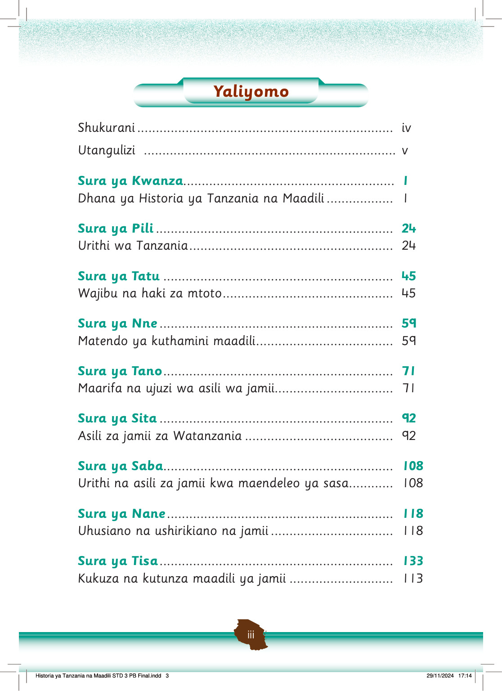

Yaliyomo
Shukurani
Utangulizi
Sura ya Kwanza.
Dhana ya Historia ya Tanzania na Maadili.
Sura ya Pili.
Urithi wa Tanzania.
Sura ya Tatu.
Wajibu na haki za mtoto.
Sura ya Nne.
Matendo ya kuthamini maadili.
Sura ya Tano.
Maarifa na ujuzi wa asili wa jamii.
Sura ya Sita.
Asili za jamii za Watanzania.
Sura ya Saba.
Urithi na asili za jamii kwa maendeleo ya sasa.
Sura ya Nane.
Uhusiano na ushirikiano na jamii.
Sura ya Tisa.
Kukuza na kutunza maadili ya jamii.
Historia ya Tanzania na Maadili STD 3 PB Final.indd 3
29/11/2024 17:14